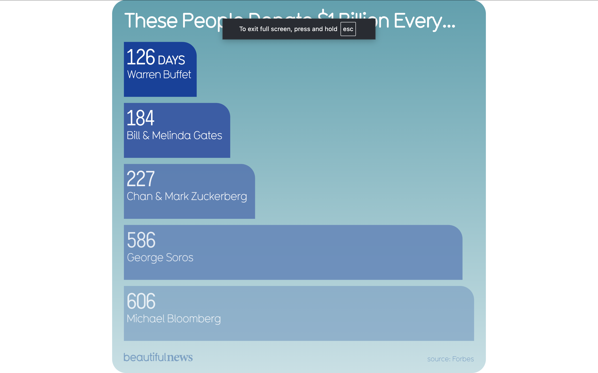

Visualization

Source: Information is Beautiful
Critique
Through Edward Tufte's idea of informational "resolution," this chart delivers clarity at first glance yet squeezes out much surrounding detail. It measures how many days it would take select billionaires to give away a billion dollars. Take Warren Buffett: he'd manage it in 126 days; Michael Bloomberg, however, would require 606. By turning vast sums into durations, the design grounds staggering figures in everyday experience. Time becomes a bridge, something familiar replacing something remote. At first sight, its strength shines through simplicity: proportions match perception, the message sticks. What stands out is immediate; what lies beneath stays hidden.
Still, the chart falls short in delivering full clarity. How exactly "days" are derived remains unexplained by the image. The calculation could be based on net worth, yearly earnings, daily income, or ease of converting assets into cash, and any mix of these assumptions would shape the result. Without insight into the method behind the numbers, viewers have little basis to judge whether comparing one figure to another is fair. This becomes especially important given how differently wealth is structured. Warren Buffett's fortune largely rests on long-term investments, whereas other billionaires may rely more on liquid or easily tradable assets. Viewing every ultra-wealthy individual through an identical financial lens overlooks these differences and risks producing distorted conclusions.
The visualization also omits temporal context. It does not specify when the data was recorded, whether wealth fluctuates, or how market shifts might affect these figures. Although Forbes is cited, exact data points, publication dates, or methodological details are absent. From a Tuftean perspective, this sharpens visual appeal while dulling analytical depth, prioritizing simplicity over transparency.
What stands out most about the display is not just its clarity, but what it leaves unexamined. The effect is clear: individuals with extreme wealth can give away a billion dollars quickly while experiencing little personal impact. What remains absent are the causes that make this possible. The visualization does not address economic systems, tax structures, investment growth, or inheritance practices that allow wealth to accumulate at such scales.
By framing generosity purely through financial ability, the visualization risks narrowing interpretation. Emphasizing donations may suggest that philanthropy is the primary solution to issues such as disease, injustice, or poverty. However, many of these problems are deeply connected to the same economic systems that generate extreme inequality. Ignoring this link turns complex structural challenges into simplified moral judgments about individual generosity rather than systemic responsibility.
Because interpretation depends on understanding cause, this absence reshapes meaning. Viewers may come away believing that reducing inequality simply requires encouraging billionaires to give more, rather than examining broader policy tools such as taxation, regulation, or redistribution.
While one billion dollars appears small compared to the fortunes displayed, the surrounding language subtly extends the argument beyond what the data alone supports. Phrases such as "money they don't need, going to people who do" frame philanthropy as an obvious and sufficient remedy. The visualization does not examine whether these donations are effective, accountable, or capable of producing lasting change.
The choice of featured donors also risks selective emphasis. Highlighting well-known philanthropists may imply that large-scale generosity is common among the ultra-rich, while excluding those who donate far less. Without comparative data showing average giving behavior, the implied narrative stretches further than the evidence justifies.
Overall Conclusion
Overall, the visualization succeeds as a striking and accessible visual argument. Translating immense wealth into time makes the scale of inequality immediately understandable. However, under Tufte's principles, clarity alone is not enough. By omitting methodological transparency, causal explanation, and broader context, the graphic limits deeper understanding and invites conclusions that extend beyond the data shown. Including clearer explanations of how figures were calculated and situating them within wider economic patterns would significantly strengthen both credibility and interpretive depth.